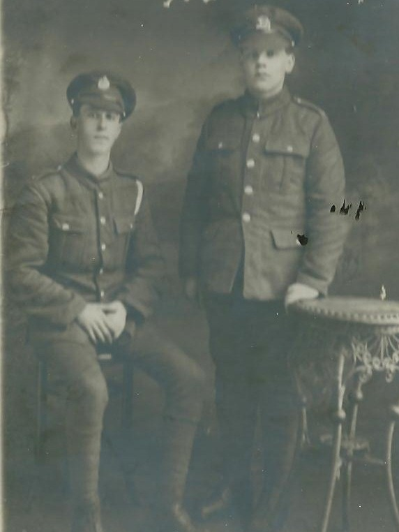

People, places, evidence and stories from across the family. A growing archive built around original photographs, documents, family knowledge and historical research.

The first fully developed collection follows Private Ernest Harmson of York to the Somme and reconstructs the 10th West Yorkshires' attack at Fricourt on 1 July 1916.
It brings together family photographs, the battlefield today, contemporary mapping, Fricourt New Military Cemetery, Thiepval and the eyewitness account of war poet Siegfried Sassoon.
Enter the Harmson branch →